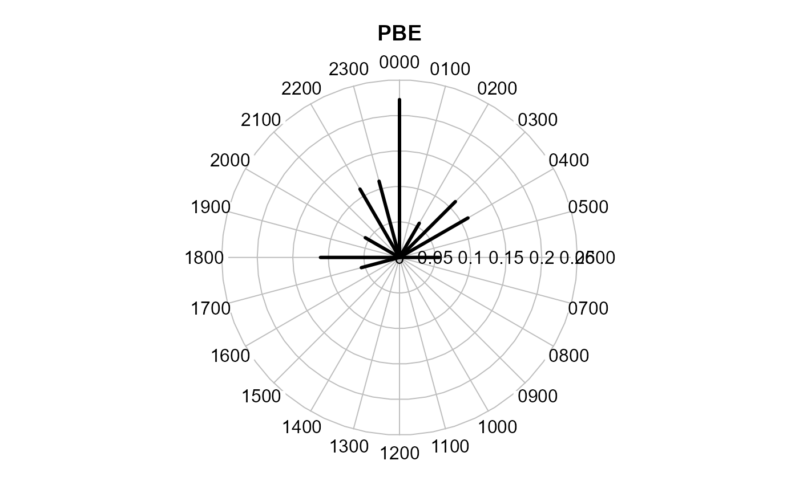

4. Data exploration and visualisation in camtrapR
Juergen Niedballa (camtrapr@gmail.com)
2020-04-08
Source:vignettes/camtrapr4.Rmd
camtrapr4.RmdOverview
camtrapR can help with data exploration by creating maps of observed species richness and the number of independent detections by species. It can also plot single-species and two-species diel activity data. In addition, a survey report summarising camera trap station operation and species records can be created easily. The usage of these functions will be demonstrated using the sample data set included in the package.
In creating the plots and the report, the species record table and the camera trap station information table are combined. Therefore, both are required as function input (more details in the vignette on “Image organisation and species/individual identification”).
Species presence maps
The function detectionMaps can generate maps of observed species richness (number of different species recorded at stations) and maps showing the number of observations by species. It uses the record table produced by recordTable and the camera trap station table as input. Note that the examples are not particularly pretty because of the low number of records used in the sample data set.
Number of observed species
We first create a map of the number of observed species.
Mapstest1 <- detectionMaps(CTtable = camtraps,
recordTable = recordTableSample,
Xcol = "utm_x",
Ycol = "utm_y",
stationCol = "Station",
speciesCol = "Species",
printLabels = TRUE,
richnessPlot = TRUE, # by setting this argument TRUE
speciesPlots = FALSE,
addLegend = TRUE
)
Number of records by species
Maps of the number of independent detections of the observed species can be generated just as easily. Normally, maps for all species will be created at once. Here, to avoid cluttering the vignette, we look at one species only. This is achieved via the argument speciesToShow. Arguments richnessPlot and speciesPlots are changed compared to the observed species richness plot above. It is also possible to set both arguments to TRUE or FALSE.
# subset to 1 species
recordTableSample_PBE <- recordTableSample[recordTableSample$Species == "PBE",]
Mapstest2 <- detectionMaps(CTtable = camtraps,
recordTable = recordTableSample_PBE,
Xcol = "utm_x",
Ycol = "utm_y",
stationCol = "Station",
speciesCol = "Species",
speciesToShow = "PBE", # added
printLabels = TRUE,
richnessPlot = FALSE, # changed
speciesPlots = TRUE, # changed
addLegend = TRUE
)
The number of independent observations depends on the argument minDeltaTime in the recordTable function.
Shapefile export
Function detectionMaps comes with 4 arguments that allow for and control creation of ESRI shapefile for use in GIS software: writeShapefile, shapefileName, shapefileDirectory and shapefileProjection. The resulting shapefile will show stations as point features (as the map above), with coordinates, total species number and number of observations per species in the attribute table. The shapefile attribute table is identical to the resulting data.frame of the detectionMaps function.
The following example demonstrates the creation of a shapefile using detectionMaps. Please note that for demonstration the shapefile is saved to a temporary directory, which makes no sense in real data and must be changed by the user. The argument shapefileProjection must be a valid argument to the function CRS from the package sp, i.e., a PROJ.4 string. These can be found under http://spatialreference.org/. There, find the projection your coordinates are in, click on “Proj4” and copy the text. In this example, it is a projected coordinate system, UTM 50N with the WGS84 ellipsoid. Its PROJ.4 string is "+proj=utm +zone=50 +ellps=WGS84 +datum=WGS84 +units=m +no_defs". Because it is so widespread, here’s the PROJ4 string for standard Lat/Long coordinates using the WGS84 ellipsoid (a standard used by most GPS devices): "+proj=longlat +ellps=WGS84 +datum=WGS84 +no_defs".
# define shapefile name
shapefileName <- "recordShapefileTest"
shapefileProjection <- "+proj=utm +zone=50 +ellps=WGS84 +datum=WGS84 +units=m +no_defs"
# run detectionMaps with shapefile creation
Mapstest3 <- detectionMaps(CTtable = camtraps,
recordTable = recordTableSample,
Xcol = "utm_x",
Ycol = "utm_y",
stationCol = "Station",
speciesCol = "Species",
richnessPlot = FALSE, # no richness plot
speciesPlots = FALSE, # no species plots
writeShapefile = TRUE, # but shaepfile creation
shapefileName = shapefileName,
shapefileDirectory = tempdir(), # change this in your scripts!
shapefileProjection = shapefileProjection
)
# check for the files that were created
list.files(tempdir(), pattern = shapefileName)## [1] "recordShapefileTest.dbf" "recordShapefileTest.prj"
## [3] "recordShapefileTest.shp" "recordShapefileTest.shx"## OGR data source with driver: ESRI Shapefile
## Source: "C:\Users\Juergen\AppData\Local\Temp\RtmpUpycSg", layer: "recordShapefileTest"
## with 3 features
## It has 9 fields## Station utm_y utm_x EGY MNE PBE TRA VTA n_species
## 1 StationA 604000 526000 0 0 4 0 2 2
## 2 StationB 606000 523000 0 2 8 0 2 3
## 3 StationC 607050 525000 6 0 6 8 1 4# the output of detectionMaps is used as shapefile attribute table. Therefore, they are identical:
all(shapefileTest@data == Mapstest3)## [1] TRUEMaking and using a SpatialPointsDataFrame
The data frame that detectionMaps returns can be turned into a SpatialPointsDataFrame as defined in the package sp. SpatialPointsDataFrames can be used for spatial analyses and queries in R, e.g. for extracting data from raster layers such as elevation maps.
This is how it works. We use the output of detectionMaps created above and make a SpatialPointsDataFrame. Afterwards, a sample raster is created, plotted together with the points and the values are extracted.
detections_spdf <- SpatialPointsDataFrame(coords = Mapstest3[,c("utm_x", "utm_y")],
data = Mapstest3,
proj4string = CRS(shapefileProjection))
str(detections_spdf)## Formal class 'SpatialPointsDataFrame' [package "sp"] with 5 slots
## ..@ data :'data.frame': 3 obs. of 9 variables:
## .. ..$ Station : chr [1:3] "StationA" "StationB" "StationC"
## .. ..$ utm_y : num [1:3] 604000 606000 607050
## .. ..$ utm_x : num [1:3] 526000 523000 525000
## .. ..$ EGY : int [1:3] 0 0 6
## .. ..$ MNE : int [1:3] 0 2 0
## .. ..$ PBE : int [1:3] 4 8 6
## .. ..$ TRA : int [1:3] 0 0 8
## .. ..$ VTA : int [1:3] 2 2 1
## .. ..$ n_species: int [1:3] 2 3 4
## ..@ coords.nrs : num(0)
## ..@ coords : num [1:3, 1:2] 526000 523000 525000 604000 606000 ...
## .. ..- attr(*, "dimnames")=List of 2
## .. .. ..$ : NULL
## .. .. ..$ : chr [1:2] "utm_x" "utm_y"
## ..@ bbox : num [1:2, 1:2] 523000 604000 526000 607050
## .. ..- attr(*, "dimnames")=List of 2
## .. .. ..$ : chr [1:2] "utm_x" "utm_y"
## .. .. ..$ : chr [1:2] "min" "max"
## ..@ proj4string:Formal class 'CRS' [package "sp"] with 1 slot
## .. .. ..@ projargs: chr "+proj=utm +zone=50 +ellps=WGS84 +datum=WGS84 +units=m +no_defs +towgs84=0,0,0"# now we create a sample raster and extract data from it (if the raster package is available)
if("raster" %in% installed.packages()){
library(raster)
raster_test <- raster(x = extend(extent(detections_spdf), y = 500), nrows = 10, ncols = 10)
values(raster_test) <- rpois(n = 100, lambda = seq(1, 100)) # fill raster with random numbers
# plot raster
plot(raster_test,
main = "some raster with camera trap stations",
ylab = "UTM N", # needs to be adjusted if data are not in UTM coordinate system
xlab = "UTM E") # needs to be adjusted if data are not in UTM coordinate system
# add points to plot
points(detections_spdf, pch = 16)
# add point labels
text(x = coordinates(detections_spdf)[,1],
y = coordinates(detections_spdf)[,2],
labels = detections_spdf$Station,
pos = 1)
# extracting raster values. See ?extract for more information
detections_spdf$raster_value <- extract(x = raster_test, y = detections_spdf)
# checking the attribute table
detections_spdf@data
}
## Station utm_y utm_x EGY MNE PBE TRA VTA n_species raster_value
## 1 StationA 604000 526000 0 0 4 0 2 2 86
## 2 StationB 606000 523000 0 2 8 0 2 3 31
## 3 StationC 607050 525000 6 0 6 8 1 4 16The same procedure also works with the camera trap station information table instead of the detectionMaps output.
Visualising species activity data
Four different functions are provided to plot single-species and two-species activity patterns. Activity data are visualised using the time of day records were taken while ignoring the date. Record times are read from the record table created by recordTable. The criterion for temporal independence between records in the function recordTable, minDeltaTime, will affect the results of the activity plots. Imagine you make recordTable return all records by setting minDeltaTime = 0 and you then plot activity of some species that loves to perform in front of cameras (e.g. Great Argus pheasants in Borneo), resuting in hundreds of images. The representation of activity will be biased towards the times the species happened to perform in front of your cameras. Likewise, setting cameras to shoot sequences of several images per trigger event and then returning all images will cause biased representations. Therefore, it is wise to set minDeltaTime to some higher number, e.g. 60 (minutes).
If desired, all functions can save the plots as png files by setting argument writePNG = TRUE.
Single-species activity plots
Single-species activity can be plotted in 3 different ways using 3 different functions:
-
activityDensity: kernel density estimation -
activityHistogram: histogram of hourly activity -
activityRadial: radial plot of hourly activity
In all three, users can either plot activity of one focal species (by setting argument allSpecies = FALSE) or of all recorded species at once (by setting argument allSpecies = TRUE). If desired, plots can be saved as png files in a user-defined location automatically (arguments writePNG and plotDirectory). Note that the examples are not particularly pretty because of the low number of records used in the sample data set.
# we first pick a species for our activity trials
species4activity <- "PBE" # = Prionailurus bengalensis, Leopard CatHistogram
This function creates a histogram with hourly intervals, i.e. histogram cells are 1 hour wide.

Radial plot
This function uses functions from the plotrix package to create the clock face. Records are aggregated to the full hour (as in activityHistogram).
activityRadial(recordTable = recordTableSample,
species = species4activity,
lwd = 3 # adjust line with of the plot
)
One can also make the function show a polygon instead of the radial lines. rp.type is an argument to radial.plot and defaults to "r" (radial). Setting it to "p" gives a polygon.
Two-species activity plots
Two-species activity overlaps can be plotted in addition to single-species activity plots. It is the overlap between two single-species kernel density estimations. The functions overlapPlot and overlapEst from the overlap package are used for that purpose. The overlap coefficient shown in the plot is Dhat1 from overlapEst.
# define species of interest
speciesA_for_activity <- "VTA" # = Viverra tangalunga, Malay Civet
speciesB_for_activity <- "PBE" # = Prionailurus bengalensis, Leopard Cat
# create activity overlap plot
activityOverlap (recordTable = recordTableSample,
speciesA = speciesA_for_activity,
speciesB = speciesB_for_activity,
writePNG = FALSE,
plotR = TRUE,
add.rug = TRUE
)
This plot an be customised by passing additional arguments to overlapPlot:
activityOverlap (recordTable = recordTableSample,
speciesA = speciesA_for_activity,
speciesB = speciesB_for_activity,
writePNG = FALSE,
plotR = TRUE,
createDir = FALSE,
pngMaxPix = 1000,
linecol = c("black", "blue"),
linewidth = c(5,3),
linetype = c(1, 2),
olapcol = "darkgrey",
add.rug = TRUE,
extend = "lightgrey",
ylim = c(0, 0.25),
main = paste("Activity overlap: ", speciesA_for_activity, "-", speciesB_for_activity)
)
Survey summary report
surveyReport conveniently creates a summary report containing:
- number of stations (total and operational)
- number of active trap days (total and by station)
- number of days with cameras set up (operational or not; total and by station)
- total trapping period
- camera trap and record date ranges
- number of species by station
- number of independent events by species
- number of stations at which species were recorded
- number of independent events by station and species
reportTest <- surveyReport (recordTable = recordTableSample,
CTtable = camtraps,
speciesCol = "Species",
stationCol = "Station",
setupCol = "Setup_date",
retrievalCol = "Retrieval_date",
CTDateFormat = "%d/%m/%Y",
recordDateTimeCol = "DateTimeOriginal",
recordDateTimeFormat = "%Y-%m-%d %H:%M:%S",
CTHasProblems = TRUE)##
## -------------------------------------------------------
## [1] "Total number of stations: 3"
##
## -------------------------------------------------------
## [1] "Number of operational stations: 3"
##
## -------------------------------------------------------
## [1] "n nights with cameras set up (operational or not. NOTE: only correct if 1 camera per station): 128"
##
## -------------------------------------------------------
## [1] "n nights with cameras set up and active (trap nights. NOTE: only correct if 1 camera per station): 123"
##
## -------------------------------------------------------
## [1] "total trapping period: 2009-04-02 - 2009-05-17"Some basic information is shown in the console. The function output is a list with 5 elements.
## List of 5
## $ survey_dates :'data.frame': 3 obs. of 8 variables:
## ..$ Station : Factor w/ 3 levels "StationA","StationB",..: 1 2 3
## ..$ setup_date : Date[1:3], format: "2009-04-02" "2009-04-03" ...
## ..$ first_image_date: Date[1:3], format: "2009-04-10" "2009-04-05" ...
## ..$ last_image_date : Date[1:3], format: "2009-05-07" "2009-05-14" ...
## ..$ retrieval_date : Date[1:3], format: "2009-05-14" "2009-05-16" ...
## ..$ n_nights_total : int [1:3] 42 43 43
## ..$ n_nights_active : num [1:3] 42 43 38
## ..$ n_cameras : int [1:3] 1 1 1
## $ species_by_station:'data.frame': 3 obs. of 2 variables:
## ..$ Station : chr [1:3] "StationA" "StationB" "StationC"
## ..$ n_species: int [1:3] 2 3 4
## $ events_by_species :'data.frame': 5 obs. of 3 variables:
## ..$ species : chr [1:5] "EGY" "MNE" "PBE" "TRA" ...
## ..$ n_events : chr [1:5] "6" "2" "18" "8" ...
## ..$ n_stations: chr [1:5] "1" "1" "3" "1" ...
## $ events_by_station :'data.frame': 9 obs. of 3 variables:
## ..$ Station : chr [1:9] "StationA" "StationA" "StationB" "StationB" ...
## ..$ Species : chr [1:9] "PBE" "VTA" "MNE" "PBE" ...
## ..$ n_events: int [1:9] 4 2 2 8 2 6 6 8 1
## $ events_by_station2:'data.frame': 15 obs. of 3 variables:
## ..$ Station : Factor w/ 3 levels "StationA","StationB",..: 1 1 1 1 1 2 2 2 2 2 ...
## ..$ Species : Factor w/ 5 levels "EGY","MNE","PBE",..: 1 2 3 4 5 1 2 3 4 5 ...
## ..$ n_events: num [1:15] 0 0 4 0 2 0 2 8 0 2 ...The list elements can be accessed individually like this: reportTest[[1]] or like this: reportTest$survey_dates.
Some of the arguments need further explanations. CTHasProblems is used to tell camtrapR whether to look for columns specifying periods of malfunctioning in CTtable (e.g. ‘Problem1_from’ and ‘Problem1_to’). If there was more than one camera per station cameraCol specifies the columns containing camera IDs . Not setting it will cause camtrapR to assume there was 1 camera per station, biasing the trap day calculation. sinkpath can optionally be a directory in which the function will save the output as a txt file.
# here's the output of surveyReport
reportTest[[1]] # camera trap operation times and image date ranges## Station setup_date first_image_date last_image_date retrieval_date
## 1 StationA 2009-04-02 2009-04-10 2009-05-07 2009-05-14
## 2 StationB 2009-04-03 2009-04-05 2009-05-14 2009-05-16
## 3 StationC 2009-04-04 2009-04-06 2009-05-12 2009-05-17
## n_nights_total n_nights_active n_cameras
## 1 42 42 1
## 2 43 43 1
## 3 43 38 1## Station n_species
## 1 StationA 2
## 2 StationB 3
## 3 StationC 4## species n_events n_stations
## 1 EGY 6 1
## 2 MNE 2 1
## 3 PBE 18 3
## 4 TRA 8 1
## 5 VTA 5 3## Station Species n_events
## 1 StationA PBE 4
## 2 StationA VTA 2
## 3 StationB MNE 2
## 4 StationB PBE 8
## 5 StationB VTA 2
## 6 StationC EGY 6
## 7 StationC PBE 6
## 8 StationC TRA 8
## 9 StationC VTA 1Survey summary report zip file
A zip file containing the output of surveyReport, the input tables, activity plots, detection maps and a prepared R script can be created by setting makezip = TRUE. The zip file is relatively small and can easily be used for data sharing with colleagues.
Data archiving
The tables provided by the function surveyReport together with the camera station table and the record table provide key information about surveys. These data can be used for archiving survey data in online repositories such as the Knowledge Network for Biocomplexity (KNB), a DataONE member node (https://www.dataone.org). To make these survey data understandable and usable for everyone, they need to be described thoroughly by metadata. Because of the amount of metadata needed to adequately describe the survey data and the technical requirement involved, we recommend using external software (e.g. Morpho) for annotating data generated with camtrapR before upload to repositories.